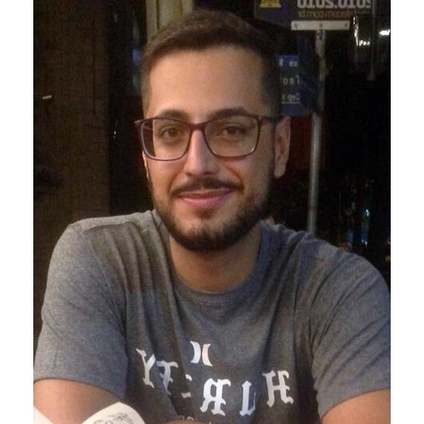

Weslley Fratini
"Sou Weslley Fratini, nascido no interior do estado de São Paulo, em uma cidade chamada Santa Rita do Passa Quatro. Sou aluno da Universade de Ribeirão Preto - UNAERP e trabalho com desenvolvimento back-end em NodeJs. Adoro tecnologia e novos desafios. Nos momentos vagos, gravo podcasts!"